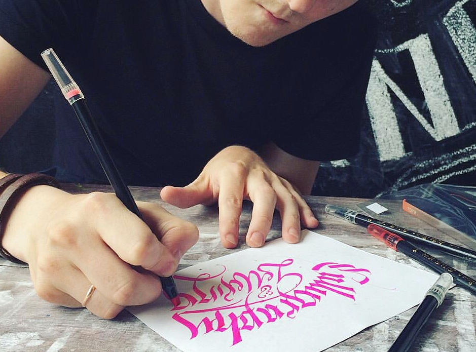
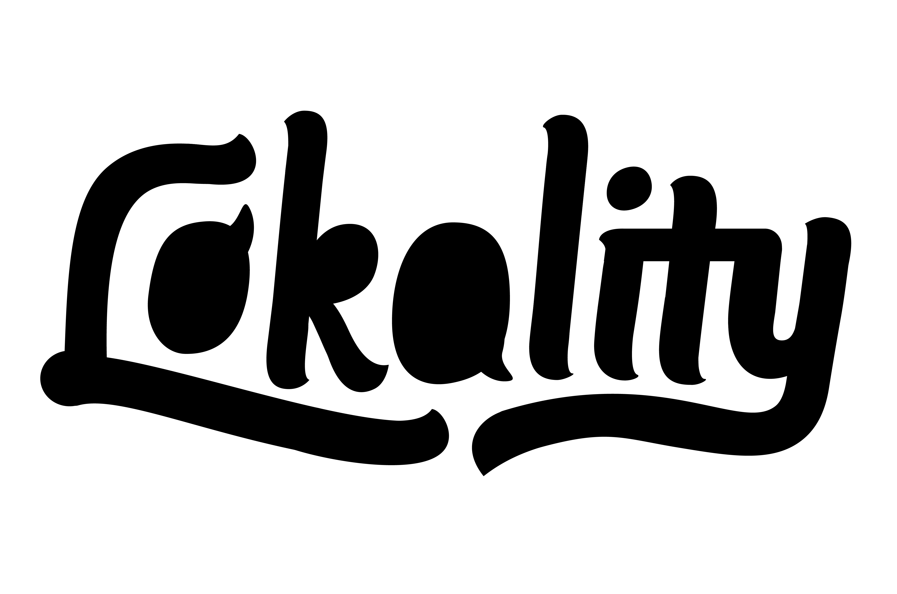
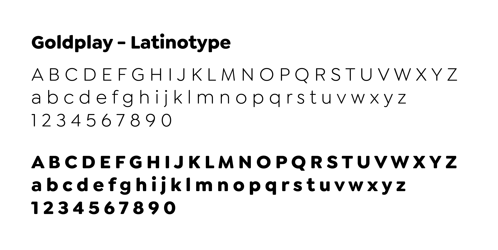

Lokality - See. Listen. Taste. Share.
Introduction
Lokality is an app that aims to bridge the gap between social media firehoses —Facebook, Twitter, Youtube, Reddit and Instagram to the hyperlocal, Whatsapp, Viber Groups, Telegram Communities and SMS
Information, and how to organize it has always been tough to crack. There are a few things that need to be met before it’s deemed useful for anyone reading it:
- It has to cater to your location
- It has to be something you’re interested in
- It has to be relevant to your situation.
Once all of these boxes have been ticked, Only then can we decide whether the particular news is important or merits attention.
A temporary solution that has been popping up are Viber Groups, Whatsapp Group Chats and Telegram Communities to be able to curate news that’s relevant to our interests, location or situation. In fact, several viber groups have mushroomed that cater to every niche imaginable from selling food, getting your news source and finding out what’s happening within your vicinity. There's even a Viber Group for your favorite restaurant!
Useful? Most definitely, relevant? maybe. Interesting? well, it depends.
With news coming left, right and center, Lokality aims to bridge that gap between all apps. Hopefully, leveraging on the kindness of people, Lokality should only bring to you updates that’s relevant to your interests, location or situation, without the need to drink from the 'firehos' of information from well-known social media outlets.
Speaking with the developer a there were a few words that became apparent in the conversation. Lokality is an app that’s friendly. relaxed and reliable that wants to promote a sense of community.
This is where we start in our development of the Lokality identity.
The Wordmark
From Wikipedia:
A wordmark, word mark, or logotype is usually a distinct text-only typographic treatment of the name of a company, institution, or product name used for purposes of identification and branding.
When introducing a new product or idea to the market, most companies take the wordmark route.
It would be best to avoid going straight for an icon to represent the logo, because when done incorrectly may cause more confusion rather than clarity.
A wordmark is the more conservative route to take if we want to make sure that our intended audience grasps our idea.
The wordmark is a great device to introduce new ideas, and companies to the public. Because, well, it's a word. It's concise and the possibility of being misinterpretted is minimized.
A well-crafted wordmark can serve as the mark for any organization
The Style
We want our identity to be human, relatable, and dependable.
A handwritten script exemplifies humanity. We tend to connote handwritten things as more personal and more 'human' and logos are no exception. And in a time of fake news bombardment it helps that we know our source is curated by a human being who isn't out for the views but just willing to help.
The logo's every curve is carefully drawn and every arc is carefully to make sure that it flows and readability is maximized
At the heart of Lokality is conversation. Sharing information that’s relevant to the community is the essence of the app. It’s what it was built for, but aside from what is shared, Lokality aims to cultivate a communal component and the basic building blocks of community is dialogue.
Topics are created, a dialogue is made and a community is formed.
A hand drawn script wordmark, with its connected letters is symoblic of the interconnectedness of community.
Logo Features
We’ve incorporated a few easter eggs to that represent the brand messaging and goal of Lokality:
- Speech Bubble /A – conveniently placed in the middle of the wordmark, it holds the most weight and it’s what we use as our grounding device. Having it shaped like a speech dialogue box represents how the dialogue and sharing is at the center of the Lokality creedo.
- Eyeball /Lo Ligature — "Look" – The /L and /O ligature are formed like eyes to show you to “look” around and to be aware.
- L and Y Swash – The leg of the /L and the descender of the /Y, are used as a lead device to direct the viewer’s eye to the dialogue. Once again to remind of the Lokality mission.
Primary Typeface
Typography dictates an app’s personality. It is therefore vital to consider what typeface will be at the forefront giving the brand its voice. – primary font.
Typefaces become the voice of the app. Picking the right voice to suit the image is crucial to being able to deliver our message across in a concise fashion.
Primary Typeface - Goldplay
Goldplay by Latinotype was chosen for its circular shape which evokes friendliness.
From the LatinoType website>:
Its rounded, soft terminals give it a friendly and expressive look, and its modern and contemporary style as well as its classic proportions make it an excellent choice for headlines, logotypes, branding, books, magazines, motion graphics, and use on web and Tv.
Color Scheme
Colors are the clothes of the identity. The right color scheme can amplify and help solidify the messaging and identity.
We pick a scheme that's playful and youthful without appearing childish.'
The scheme is centered around primary colors but with a bit more pizzaz
The Lokality Logo

Individually, these elements speak the same message. It’s a classic case of the final output being greater than the sum of its parts.
Lokality —News that’s relevant to YOU.
Supplementary (Identity)
Other Logo Applications